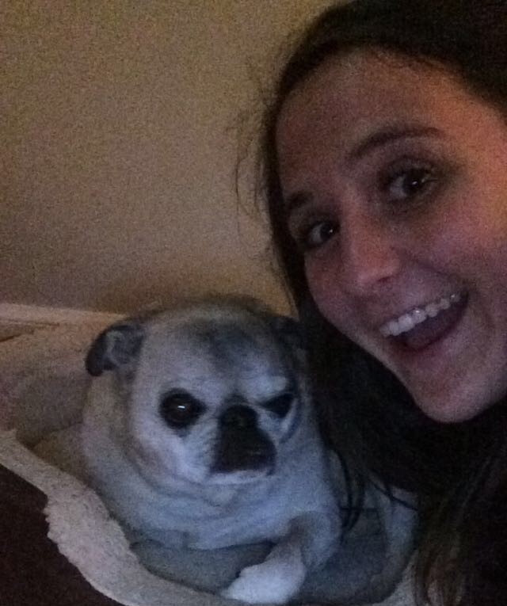

back to current website
five fun facts

- I used to read while sitting upside down on the couch. While I don't sit upside down anymore, reading is still one of my favorite activities. One of my favorite books is East of Eden by John Steinbeck and favorite authors are Roxane Gay, Jhumpa Lahiri, and Rebecca Traister.
- Mumford & Sons is my all time favorite band (their song Timshel is inpsired by East of Eden). I've been to two of their concerts and even touched Marcus Mumford's hand - a top five moment in my life.
- I absolutely love dogs and have a slight obsession with pugs. I own over 20 articles of clothing and other trinkets dedicated to their adorable, squishy, little faces.
- Something I want to do in life is visit all fifty states before I turn fifty. I'm currently ahead of schedule by one with 25.
- I'm a lover of all food and have yet to have a meal I didn't like, but I absolutely despire bananas and refuse to eat or even be within smelling distance of them.